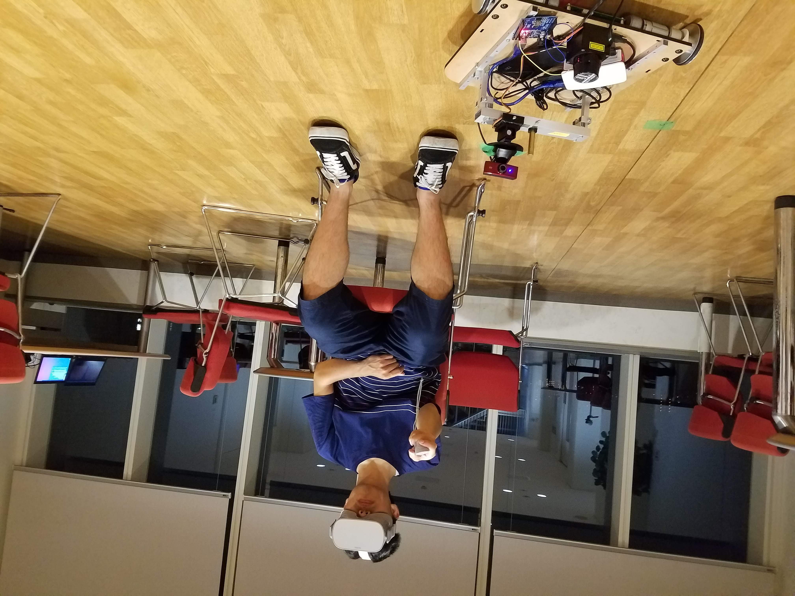
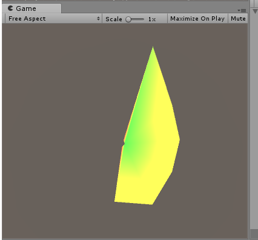

ロボコンでは、ロボットは実物を見ながらコントローラで操作するのがほとんどで、何か他の方法でロボットを操作出来ないかな考えていました。
その時、2万円台のVRゴーグルのOculus Goが発売されて、センサ情報を見ながらVRゴーグル上でロボットを操作できれば面白いのではないかなと思い研究と並行で実装していました。
ROS#を使ってOculus Goと通信してLRFを可視化する

最初に行ったのはLRFを可視化して、VR上で見るということです。
Unityで表示ソフトを作りながら、ROSの方でも通信ソフトのROS#を調整していたのでかなり手間取りました。
ですが、LRFデータを3D空間上で見たときはロボットには空間がこのように見えているのかと感動しました。
この時のROS#の使い方はブログにまとめています。
Oculus GoとROSをROSSharpで通信させてLRFのデータ表示
カメラデータを見ながらVRゴーグルを通じてロボットを操作する
LRFデータを見ながら操作するのは良かったのですが、2D平面しか情報が得られないので操作がかなりしにくいことに気づきました。
ですので、カメラをロボットに搭載して、カメラと頭の動きを連動させて周囲の情報を見ながら車のように操作すれば、ロボットを操作するのは楽しいのではないかと思って作りました。
VRゴーグルを使ってロボットを操作しながら地図を修正する
自律移動ロボットの研究では地図の作成や、複数台の移動経路の生成をしていました。
この時、地図は作成した後に椅子や机の周囲の環境を動かすと修正する必要があるのですが、これを3D空間上で行えば直感的に地図を修正できるのはと思いました。
そこで、Realsenseの点群データを表示・自律移動ロボットの移動先の指定・移動経路の表示・地図の修正をVRゴーグルを通じて行えるようにしました。
(ただ、実際にやってみたらRealsenseの点群データは様々な角度で見れて周囲の環境を見るのに役立ちましたが、2D情報はディスプレイで見たほうが見やすかったです)